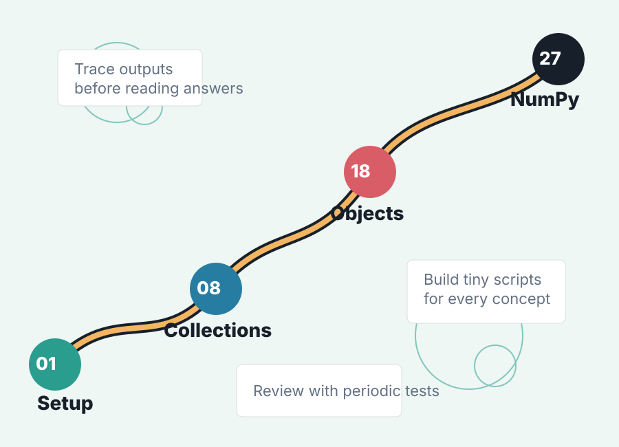

Concept checks
The early chapters verify Python orientation: why Python is used, how to run code, basic data types, expressions, imports, random numbers, operators, and formatting.
5th edition solutions companion
This learning website summarizes Let Us Python Solutions by Yashavant Kanetkar and Aditya Kanetkar as a guided practice path: basics, collections, functions, object-oriented Python, files, concurrency, synchronization, and NumPy.

Book Summary
The early chapters verify Python orientation: why Python is used, how to run code, basic data types, expressions, imports, random numbers, operators, and formatting.
Many exercises ask what a snippet prints or why a statement fails. The focus is building mental execution skills around conditionals, loops, slicing, mutability, identity, and collection behavior.
The solutions demonstrate compact scripts for string processing, histograms, numeric series, nested lists, dictionaries, recursion, decorators, file handling, and simple class models.
Later chapters move into namespaces, classes, operator overloading, containership, inheritance, iterators, generators, exceptions, threading, locks, events, conditions, and NumPy arrays.
Use With The Book
Source reference
Keep your copy of the book open while using this site. Each module gives you the chapter's learning goal, the habits to practice, and the kind of exercise to attempt before checking the book's worked solution.
The book is copyrighted, so this site does not host or link to a downloadable PDF. The link points to a legitimate book listing where you can obtain access through an authorized channel.
For private local study, keep your own PDF copy at
assets/Let Us Python (5th Ed.) - SOLUTIONS (Yashavant Kanetkar, Aditya Kanetkar).pdf.
Do not commit that file to a public repository unless you have
permission to redistribute it.
Learning Modules
Practice
Python Basics
Study Plan
Chapters 1-7: setup, variables, strings, decisions, loops, input, and formatted output.
Chapters 8-15: lists, tuples, sets, dictionaries, comprehensions, functions, recursion, and functional tools.
Chapters 16-21: packages, namespaces, classes, object internals, inheritance, iterators, and generators.
Chapters 22-27: exceptions, files, decorators, command-line usage, concurrency, synchronization, and NumPy.